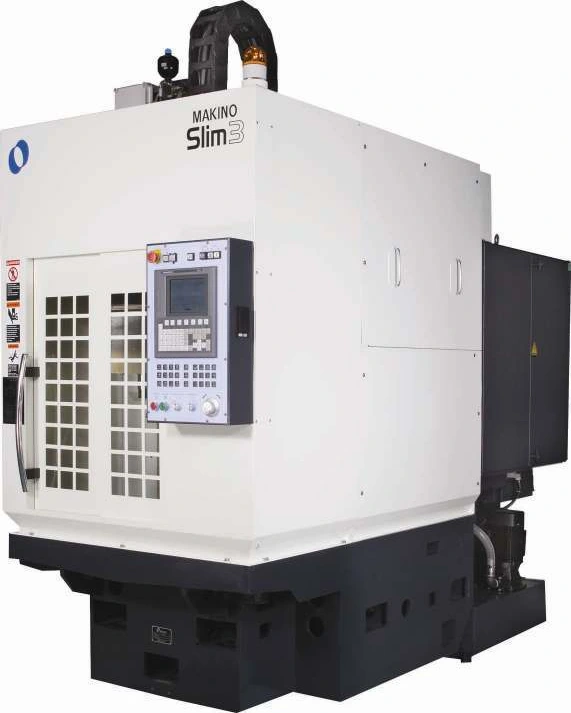
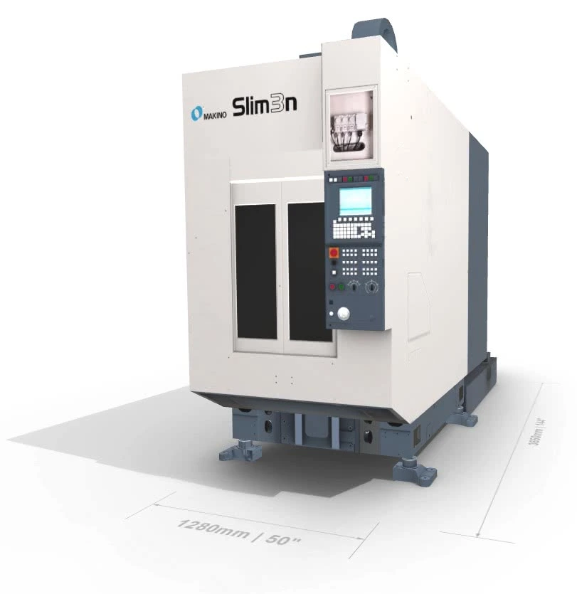

SLIM-SERIES / ELECTRICAL SERVICE SUPPORT
SLIMChọn đúng cấu hình máy.
Chọn model và bộ điều khiển để mở đúng sơ đồ điện.
- 01 Model máy
- 02 Bộ điều khiển
- 03 Sơ đồ điện
Chọn model máy
Đổi model ↗
BƯỚC 02
Chọn bộ điều khiển
Đối chiếu tên FANUC trên bộ điều khiển và mã bản vẽ trên tài liệu máy. STD và CE là hai phiên bản riêng.
Nhận diện trước khi mở sơ đồ
Pro L / Pro S và 0i-MC / 0i-MD / 0i-MF / 0i-MF+ phải khớp với máy thực tế. Sau đó đối chiếu mã bản vẽ và STD/CE. Các nhánh OPT, APC hoặc model dùng chung vẫn cần kiểm tra theo cấu hình máy.
Ảnh Slim3: Makino Parts Manual V090I-P1E-XA, trang bìa. Ảnh Slim3n: Makino. Slim3n Mill Turn dùng bộ tài liệu riêng, chưa nằm trong các lựa chọn này.